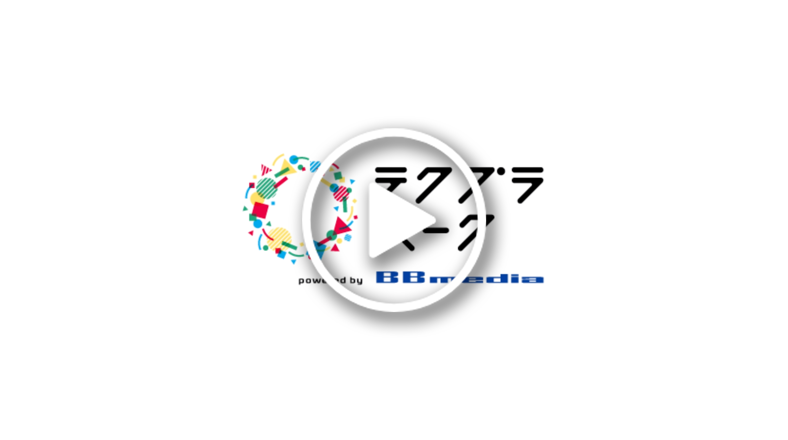

mp4
<!doctype html>
<html>

<head>
  <meta name="viewport" content="width=device-width, initial-scale=1.0, user-scalable=no">
  <meta name="apple-mobile-web-app-capable" content="yes">

  <title>8th Wall: image TEST</title>

  <script src="//cdn.8thwall.com/web/aframe/8frame-0.9.0.min.js"></script>
  <script src="//cdn.8thwall.com/web/xrextras/xrextras.js"></script>
  <script src="//apps.8thwall.com/xrweb?appKey=pEfA0jAswbqwnxYSv4J4UejI7XqXvDE5M1hctTaKpgRe5eyn1BvqRYemKqprW5TgeXbxA5"></script>

</head>

<body>

  <a-scene
    tap-place
    xrweb="disableWorldTracking: true"
    xrextras-gesture-detector
    xrextras-almost-there
    xrextras-loading
    xrextras-runtime-error>

    <a-assets>
      <!-- Credit to Poly by Google for the model: https://poly.google.com/view/dA5osnS0Rzj -->
      <!-- <a-asset-item id="home-model" src="house.glb"></a-asset-item> -->
      
      <video
        id="s-video"
        autoplay
        muted
        crossorigin="anonymous"
        loop="true"
        src="video.mp4">
      </video>
    </a-assets>

    <a-camera
      position="0 4 10"
      raycaster="objects: .cantap"
      cursor="fuse: false; rayOrigin: mouse;">
    </a-camera>

    <a-light type="directional" intensity="0.5" position="1 1 1"></a-light>
    <a-light type="ambient" intensity="1"></a-light>

    <a-entity
      xrextras-named-image-target="name: hyblidgeloil_0907_02"
      xrextras-play-video="video: #s-video; thumb: #s-thumb; canstop: true"
      geometry="primitive: plane; height: 1; width: 1.2;">
    </a-entity>


  </a-scene>

</body>
</html>